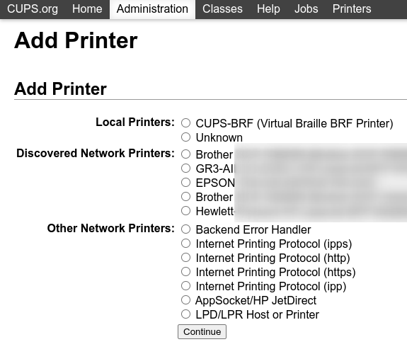

Troubleshooting¶
IoT box connection¶
Unable to locate the pairing code to connect the IoT box¶
The pairing code should be printed on receipt printers connected to the IoT box and should also be displayed on connected monitors.
The pairing code does not show under the following circumstances:
The IoT box is already connected to an Odoo database.
The IoT box is not connected to the Internet.
The code is only valid for 5 minutes after the IoT box has started. It is automatically removed from connected displays when this time has expired.
The version of the IoT box image is too old. If the IoT box image is from an earlier version, then the SD card of the IoT box needs to be re-flashed to update the image (see Flashing the SD Card).
If none of the cases listed above correct the issue, then make sure the IoT box has correctly started, by checking that a fixed green LED is showing next to the power port.
IoT box is connected but it is not showing in the database¶
When an IoT box connects to a database, it may restart. If so, it can take up to five minutes before appearing in the database. If the IoT box is still not showing after five minutes, make sure that the IoT box can reach the database and that the server does not use a multi-database environment.
To access the database from the IoT box, open a browser and type in the database address.
The IoT box is connected to the Odoo database, but cannot be reached¶
Make sure that the IoT box and the computer running the browser are located on the same network, as the IoT box cannot be reached from outside the local network.
The HTTPS certificate does not generate¶
In order to generate a HTTPS certificate, an IoT box subscription is required for the IoT box. Connecting the IoT box prior to configuring an IoT subscription for the database and IoT box with the Account Manager will result in an unsecured connection.
In addition, a firewall can also prevent the HTTPS certificate from generating correctly. In this case, deactivate the firewall until the certificate is successfully generated. It should also be noted that certain devices, such as a router that has a built-in firewall, can prevent the HTTPS certificate from generating.
See also
Printer¶
The printer is not detected¶
If a printer does not appear in the devices list, go to the IoT box homepage and make sure that it is listed under Printers.

If the printer is not present on the IoT box homepage, click Printers Server, go to the Administration tab and click on Add Printer. If the printer is not present in the list, it is likely not connected properly.
The printer outputs random text¶
For most printers, the correct driver should be automatically detected and selected. However, in some cases, the automatic detection mechanism might not be enough, and if no driver is found, the printer might print random characters.
The solution is to manually select the corresponding driver. On the IoT box homepage, click on Printers Server, go to the Printers tab and select the printer in the list. In the Administration drop-down menu, click on Modify Printer. Follow the steps and select the make and model corresponding to the printer.

Note
Epson and Star receipt printers and Zebra label printers do not need a driver to work. Make sure that no driver is selected for those printers.
Epson configuration special case¶
Most Epson printers support printing receipts in Odoo POS using the GS v 0
command. However, the following Epson printer models do not support this command:
TM-U220
TM-U230
TM-P60
TMP-P60II
Bypass this issue by configuring the printer to use the ESC * command instead.
Process to force ESC * command¶
Epson printer compatibility¶
The first step is to check whether the printer is incompatible with GS v 0 command.
See also
Epson GS v 0 documentation for
GS v 0compatible printers.Epson ESC * documentation for
ESC *compatible printers.
If the printer is not compatible with the ESC * command then the following process is not
possible. Should the printer be compatible to use the ESC * command to print, follow this process
to configure the printer with the IoT box.
IoT box configuration for ESC *¶
To configure the IoT box to use the ESC * command to print, go to the
IoT box homepage by navigating to . Then click on the IP address and this will direct to the IoT box homepage.
Choosing the printer
Now click on the Printers server button. This will redirect the browser to the CUPS page. Next, go to , choose the printer that should be modified, and then click Continue.
Tip
If the name of the printer is still uncertain, take the following steps:
Take note of the listed printers on the CUPS page.
Turn the printer off and refresh the page.
Now compare the difference with the first list to see which printer disappeared.
Turn the printer back on and refresh the page again.
Double-check the list again to see if the printer re-appears.
The printer that disappeared and reappears again on the listed printers is the name of the printer in question.
Note
This can be Unknown under Local printers.
CUPS naming convention
CUPS will prompt the administrator for three pieces of information: the Name,
Description and the Location. The last two pieces of information do not need
to be specific, however, the Name should follow a particular convention to work with the
ESC * command.
The Name should match this convention:
<printer_name>__IMC_<param_1>_<param_2>_..._<param_n>__
A breakdown of the naming convention:
printer_name: This is the printer name. It can be any character as long as it does not contain_,/,#, or ` ` (space character).IMC: This stands for Image Mode Column (the simplified name forESC *).param_1: This stands for the specific parameter:SCALE<X>: Scale of the picture (with the same aspect ratio).Xshould be an integer describing the scale percentage that should be used.Example
100is the original size,50is half the size,200is twice the size.LDV: Low Density Vertical (will be set to High Density Vertical if not specified).LDH: Low Density Horizontal (will be set to High Density Horizontal if not specified).Note
Density parameters might need to be configured in a particular way depending on the printer model.
See also
Visit Epson’s ESC * documentation and click on the printer model printer in the table above to see if the printer should set these parameters.
Example
The following are examples of proper and improper name formatting:
Proper name formatting:
EPSONTMm30II__IMC__EPSON_TM_U220__IMC_LDV_LDH_SCALE80__
Improper name formatting (this will not prevent printing, but the result might not have the expected printed output):
EPSON TMm 30II-> The name cannot have spaces.EPSONTMm30II-> The name itself is correct, but it will not useESC *.EPSONTMm30II__IMC-> This name is missing the end__.EPSONTMm30II__IMC_XDV__-> The parameterXDVdoes not match any existing parameters.EPSONTMm30II__IMC_SCALE__-> The parameterSCALEis missing the scale value.
Finish adding a printer
After setting the name of the printer with the appropriate naming convention, click Continue. Next, set the Make value to Raw and for the Model value, set this to Raw Queue (en).
After completing these steps, click Add Printer. If everything was done correctly, the page should redirect to the Banners page.
At this point the printer should have been created, now the IoT box just needs to detect it and then sync to Odoo’s server (this could take a few minutes).
Adding the printer to Odoo PoS
Once the printer is visible on the Odoo database, do not forget to choose it in the PoS printer. Navigate to .
Note
If the printer was set up incorrectly (it is still printing random text or the printed receipt is too big or small), then it cannot be modified via the printer name with CUPS. Instead, the above process can be repeated to set up another printer from scratch to create one with modified parameters.
Example setup of the Epson TM-U220B printer using ESC
The following is an example of the troubleshooting process for a TM-U220B printer model using the
ESC * command. The receipt pictured below is an example of a receipt that is printing correctly
due to proper formatting (in theory):

Trying to print this receipt right-away prior to the proper formatting will not work as the
TM-U220B printer model does not support GS v 0. Instead random characters will print:
To properly configure formatting for the Epson TM-U220B printer model take the following steps.
After consulting Epson’s website for compatibility for both of the commands: GS v 0 and ESC *, it can be seen
that indeed the TM-U220B is not compatible with GS v 0, but is compatible with ESC *.
When adding the printer, CUPS will ask which printer should be added:
In this case, the printer is connected via USB so it won’ be part of the Discovered Network Printers. Instead it is likely part of the Unknown selection under Local Printers. By unplugging the printer’s USB cable from the IoT box and refreshing the page, the Unknown printer disappears. By plugging it back in, the printer reappears, so it can be said that this is the printer in question.
For the naming convention, since it needs to print using the ESC * command, it is imperative to
add __IMC. Reference the printer model on Epson’s ESC * site to find out more
about the density parameters.

For this particular model, TM-U220, m should be equal to 0 or 1. While referencing the
Description below the pink box in the above picture, the m values could be 0, 1, 32
or 33. So in this printers case, the m value can NOT be 32 or 33 (otherwise there will be
random characters printed).
The table includes the numeric values: 32 and 33, they both occur if the Number of
bits for vertical data is set to 24. This means that is a High Vertical Density. In the case
of configuring the Epson TM-U220, the Low Vertical Density will need to be forced, as this
printer model does not support High Vertical Density for this command ESC *.
To add a Low Vertical Density, add the LDV parameter to the naming convention.

Click Continue to proceed. Next, set the Make value to Raw and for the Model value, set this to Raw Queue (en).

However, when trying to print with the naming convention: EpsonTMU220B__IMC_LDV__, it prints
the receipt, but it is too big and outside the margin. To resolve this, add a new printer (and
naming convention) with the SCALE<X> parameter to adapt to our receipt size.
Here are some examples:
Printer Naming Convention |
|
|
|
|
|---|---|---|---|---|
|
|

|

|

|
DYMO LabelWriter print issue¶
The DYMO LabelWriter has a known issue in printing with the IoT box. The OpenPrinting CUPS server installs the printer using Local RAW Printer drivers. In order to print anything, the correct Make and Model needs to be set, so the correct driver is referenced when using the device.
Additionally, a new printer needs to be added to reduce a print delay that occurs after updating the driver.
Important
The DYMO LabelWriter 450 DUO printer is the recommended DYMO printer for use with Odoo and the IoT box. It must already be connected to, and recognized on, the IoT box.
The DYMO LabelWriter 450 DUO printer contains two printers in one: a label printer and a tape printer. Choosing the correct model (either DYMO LabelWriter 450 DUO Label (en) or DYMO LabelWriter 450 DUO Tape (en)) is crucial when configuring the following processes.
To keep things consistent, both of the following processes detail the configuration for the DYMO LabelWriter 450 DUO Label (en) model. Change the model when needed.
DYMO LabelWriter not printing¶
In the case where the DYMO LabelWriter is not printing anything, a new driver needs to be installed.
First, open the OpenPrinting CUPS console by clicking at the bottom of the IoT box homepage. Next, click on in the top menu. Click into the printer in question, and select Maintenance in the first drop-down menu. Then, select Modify Printer in the second drop-down menu.
Next, select the specific network connection/printer that the modification should be made on. Click Continue.

On the next page, click Continue to proceed to set the Make of the printer.

Under Make select DYMO from the menu. Click on Continue to set the Model.

On the following page, set the Model to DYMO LabelWriter 450 DUO Label (en) (or whichever DYMO printer model is being used). Click on Modify Printer to complete setting the new driver, a confirmation page will appear.
After being redirected to a confirmation page, acknowledging a successful update, click on the button in the top menu.
All the printers installed on the OpenPrinting CUPS server appear, including the newly updated: DYMO LabelWriter 450 DUO Label (or whichever DYMO printer model is being used). Click into the printer that was just updated.
To print a test label, click on the Maintenance drop-down menu to the left of the Administration drop-down menu, and select Print Test Page. The test label will print out with a ten-second delay if the driver update was successful.

To reduce this delay a new printer will need to be added, follow the process below.
DYMO LabelWriter print delay¶
To resolve the delay issue after modifying the driver, the printer must be reinstalled. To reinstall the printer, open the OpenPrinting CUPS administration page by clicking , at the bottom of the IoT box homepage. Then, click on in the top menu, then click Add a Printer.
Tip
If the DYMO LabelWriter 450 DUO printer is not printing at all, or is not recognizable (has a RAW driver type), then update the drivers on the device. See DYMO LabelWriter not printing.

On the next screen, in the Local Printers section, select the DYMO LabelWriter 450 DUO Label (DYMO LabelWriter 450 DUO Label) (or whichever DYMO printer model is being used) pre-installed printer. Click Continue.

On the following screen, modify the Name to something recognizable, as the original printer will still be present. Click Continue to be taken to the next screen.

Next, choose the Model. Select DYMO LabelWriter 450 DUO Label (en) (or whichever DYMO printer model is being used), and finally, click Add Printer to complete the installation.

After being redirected to a confirmation page, acknowledging a successful installation, click on the button in the top menu.
All the printers installed on the OpenPrinting CUPS server appear, including the newly installed: DYMO LabelWriter 450 DUO Label (or whichever DYMO printer model is being used). Click into the printer that was just installed.

To print a test label, click on the Maintenance drop-down menu to the left of the Administration drop-down menu, and select Print Test Page. The test label should print out immediately (one-to-two seconds delay).
The Zebra printer does not print anything¶
Zebra printers are quite sensitive to the format of the Zebra Programming Language (ZPL) code that is printed. If nothing comes out of the printer or blank labels are printed, try changing the format of the report that is sent to the printer by accessing in developer mode and look for the corresponding template.
See also
Check out Zebra’s instructions on printing ZPL files here.
Barcode scanner¶
The characters read by the barcode scanner do not match the barcode¶
By default, most barcode scanners are configured in the US QWERTY format. If the barcode scanner uses a different layout, go to the form view of the device () and select the correct format.
Nothing happens when a barcode is scanned¶
Make sure that the correct device is selected in the configuration
and that the barcode is configured to send an ENTER character (keycode 28) at the end of every
barcode. To do so, navigate to .
The barcode scanner is detected as a keyboard¶
Important
Some barcode scanners do not advertise themselves as barcode scanners but as a USB keyboard instead, and will not be recognized by the IoT box.
The device type can be manually changed by going to its form view () and activating the Is scanner option.

Barcode scanner processes barcode characters individually¶
When accessing the mobile version of Odoo from a mobile device, or tablet, paired with a barcode scanner, via the IoT box, the scanner may process each barcode character as an individual scan. In this case, the Keyboard Layout option must be filled out with the appropriate language of the barcode scanner on the Barcode Scanner form page.
Tip
Access the barcode scanner form page by navigating to .
The Keyboard Layout is language based, and the options available vary, depending on the device and the language of the database. For example: English (UK), English (US), etc.
Cash drawer¶
The cash drawer does not open¶
The cash drawer should be connected to the printer and the Cash drawer checkbox should be ticked in the PoS configuration. To do so, navigate to .
Scale¶
Scales play a crucial role in the checkout process, especially for products sold by weight, rather than fixed pricing.
Set up Ariva S scales¶
Odoo has determined that a specific setting in Ariva S series scales (manufactured by Mettler-Toledo, LLC.) needs modification, and a dedicated Mettler USB-to-proprietary RJ45 cable is required for the scale to function with Odoo’s IoT box.
To correctly configure the scale for recognition by the IoT box, follow this setup process for the Ariva S series scales.
Important
It is crucial to use the official Mettler USB-to-RJ45 cable during this process.
Cable¶
The Mettler part number is 72256236 - USB-to-POS cable. Contact Mettler, or a partner, to purchase an authentic cable. Note that no other cable outside of this Mettler cable works for this configuration. Using a serial-only cable attached to a serial-to-USB adapter is not effective.

Setup¶
Refer to Mettler’s Setup Guide for Ariva S series scales during the following configuration: Ariva Checkout Scale User’s Guide.
To begin, go to page 17 in the above manual for Setup. This guide lists potential settings for the Ariva S series scales.
Follow the instructions, along with the following process, to set the scale to setup mode. First, hold the >T< button for eight seconds, or until CONF appears.
Next, press >T< until GRP 3 appears, then press >0< to confirm.
Under 3.1, ensure the setting is set to 1 (USB Virtual COM ports). Press >T< to cycle through the options under group 3.1.
Once 3.1 is set to 1, press >0< to confirm the selection. Continue to press >0< until GRP 4 appears.
Now, press >T< until EXIT appears.
Important
Do not make any other changes unless otherwise needed.
Once EXIT appears, press >0<. Following this, press >0< again to SAVE. Now the scale restarts.
Finally, restart the IoT box to recognize the changes made on the
scale’s configuration. After restarting, the scale appears as Toledo 8217, as opposed to the
previous display, where it appeared as Adam Equipment Serial.